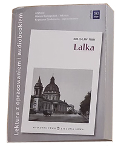
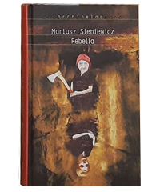
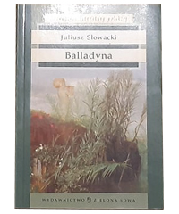
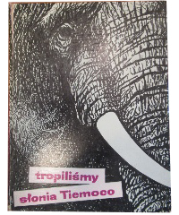

1. LalkaBolesław Prus
2. RebelioMoriusz Sieniewicz
3. BalladynaJuliusz Słowacki
 4. 250 fotografii
4. 250 fotografiizamków i palaców PolskichWarszawa, 1957
5. Tropiliśmy słonia Tiemoco Bernhard Grzimek

 4. 250 fotografii
4. 250 fotografii